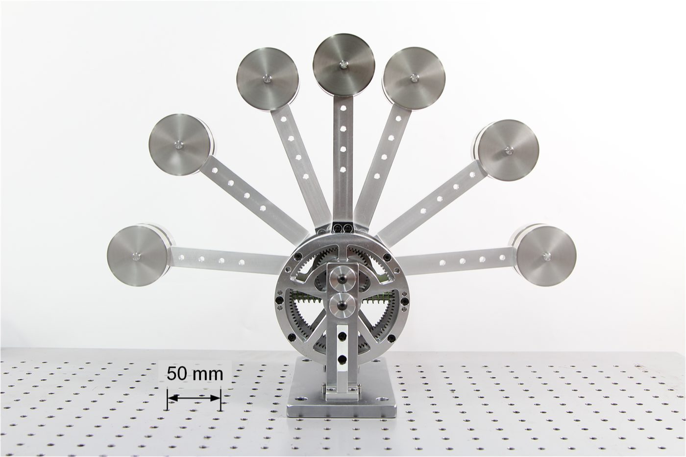
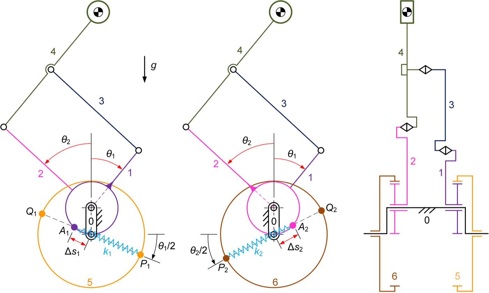
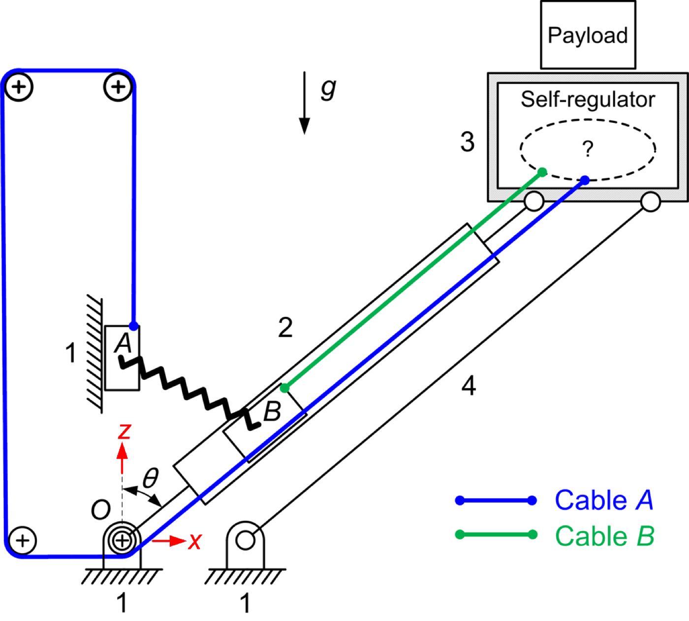
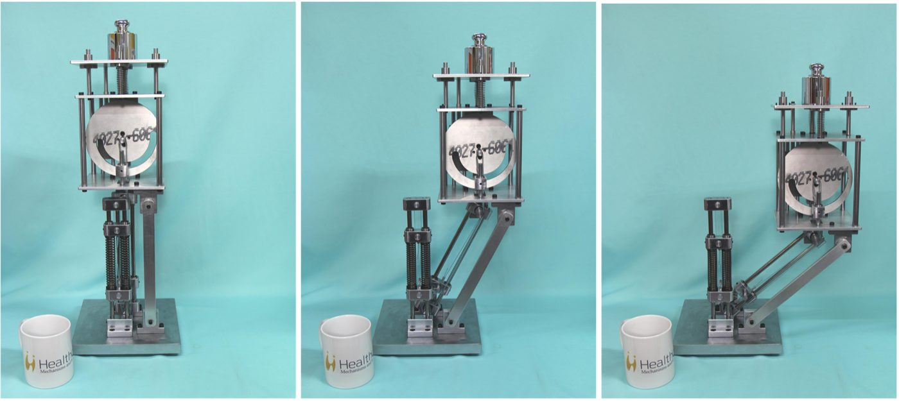
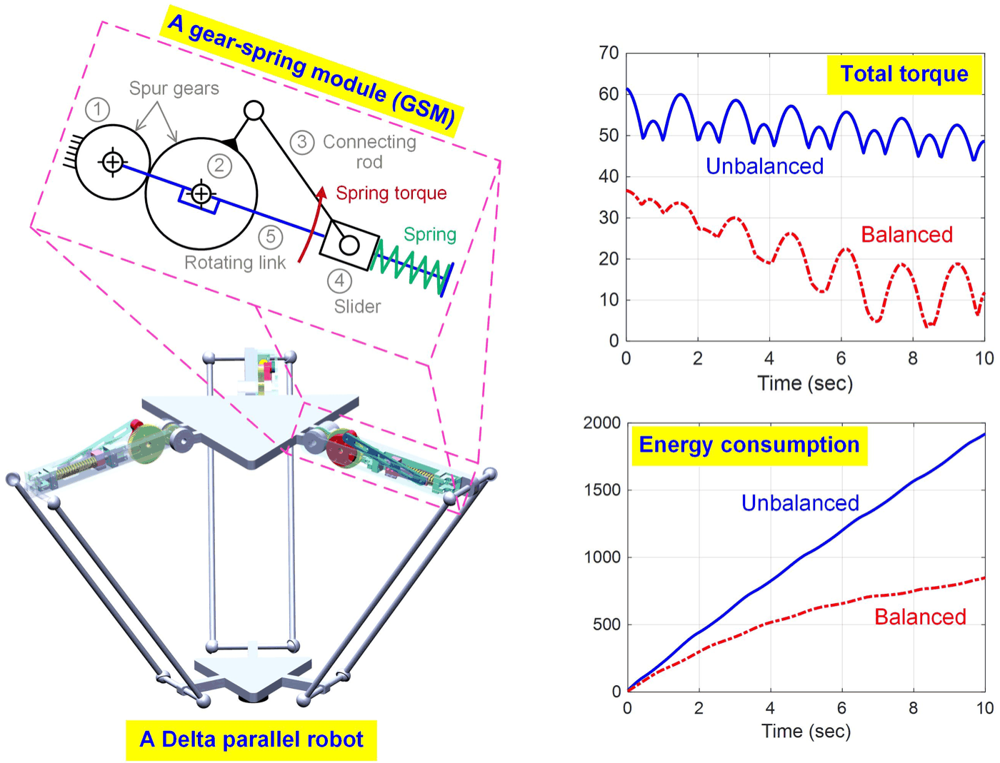

Research · Theme
Gravity balancing
A mechanism is gravity balanced when its potential energy stays constant as it moves. Its weight then does no work, and whatever drives it, a motor, a therapist's hand, a surgeon's wrist, feels only the load it actually wants to move.
The idea is old; the counterweight is the simplest example. The research question is how to achieve the same thing with springs, which add little mass, across the whole workspace of a linkage, an articulated arm or a parallel robot, and how to keep the balance when the payload or the mechanism itself changes. The work ranges from exact solutions for classical linkages to modular gear-spring units for robot arms, balancers that adjust themselves to a new payload, and the behaviour of balanced arms under real springs, uncertainty and dynamic loads.





Animations
Each representative paper has a page with a working animation of its mechanism. The energies and torques shown are computed from the paper's balancing conditions.
Balancing any four-bar linkage with two springs
A weight on the coupler is equivalent to one on the crank and one on the rocker; two zero-free-length springs carry it exactly. With a video of a tabletop prototype.
Animation · 2023Perfect balancing with a Cardan gear
A gear turning inside one twice its size moves a point in a straight line, so an ordinary spring balances an arm exactly.
Animation · 2020The gear-spring module
Gear pair, rod and spring packed along a robot arm; three of them take most of the weight off a Delta robot’s motors.
Animation · 2017A balancer that re-sets itself to the load
Change the payload and the mechanism moves its own spring attachments until it is balanced again, unpowered.
Representative papers
- Complete gravity balancing of the general four-bar linkage using linear springs. animation
Kuo, C.-H., Mechanism and Machine Theory, 2025. doi
Sole author. The home-page animation is drawn from this paper. - Perfect static balancing using Cardan-gear spring mechanisms. animation
Kuo, C.-H. and Wu, Y.-X., Mechanism and Machine Theory, 2023. doi - Gravity compensation design of Delta parallel robots using gear-spring modules. animation
Nguyen, V. L., Lin, C.-Y. and Kuo, C.-H., Mechanism and Machine Theory, 2020. doi - A single-degree-of-freedom self-regulated gravity balancer for adjustable payload. animation
Chu, Y.-L. and Kuo, C.-H., ASME Journal of Mechanisms and Robotics, 2017. doi
Also under this theme
- Performance analysis of gravity-balanced serial robotic manipulators under dynamic loads.
Nguyen, V. L., Kuo, C.-H. and Lin, P. T., Mechanism and Machine Theory, 2024. doi
A gravity-balanced arm needs almost no torque when it moves slowly; moved fast, its inertia still needs the motor. The paper measures how much balancing is worth under dynamic loads. - Reliability-based analysis and optimization of the gravity balancing performance of spring-articulated serial robots with uncertainties.
Nguyen, V. L., Kuo, C.-H. and Lin, P. T., ASME Journal of Mechanisms and Robotics, 2022. doi
A serial arm balanced at the shoulder and elbow by gear-spring modules: over a trajectory the balanced torque is far below the unbalanced one but not zero, and with uncertain dimensions, masses and stiffness it spreads into a band, which the paper analyses and optimises for reliability. - Statically balancing a reconfigurable mechanism by using one passive energy element only: a case study.
Kuo, C.-H., Nguyen, V. L., Robertson, D., Chou, L.-T. and Herder, J. L., ASME Journal of Mechanisms and Robotics, 2021. doi
A reconfigurable leg-exercise linkage has two working modes; a cable over pulleys carries both motions to one grounded spring, so a single element balances both. The paper's point: N configurations, fewer than N balancers. - Gravity compensation design of planar articulated robotic arms using the gear-spring modules.
Nguyen, V. L., Lin, C.-Y. and Kuo, C.-H., ASME Journal of Mechanisms and Robotics, 2020. doi
One gear-spring module on each link of a planar arm nearly cancels the weight in every posture (exactly at one chosen posture). - An analytical stiffness method for spring-articulated planar serial or quasi-serial manipulators under gravity and an arbitrary load.
Nguyen, V. L. and Kuo, C.-H., Mechanism and Machine Theory, 2019. doi
A link held by a compliant joint sags under a tip load by an amount that depends on its posture (exaggerated here); the paper gives the stiffness analytically, springs and weight included. - Design and implementation of a new statically balancing mechanism for slider-type desktop monitor stands.
Hsiu, W.-H., Syu, F.-C. and Kuo, C.-H., Proc. IMechE Part C: Journal of Mechanical Engineering Science, 2015. doi
Technology transferred to Syncmold Enterprise Co.; US Patent 2015/0053830 A1, Display Lifting Device.
A monitor stand balanced with a two-step disk, a bent lever and an ordinary extension spring in place of a machined cam or a custom constant-force spring (schematic). - Book chapter Gravity balancing of mechanisms.
Kuo, C.-H., In: JSME Handbook of Mechanisms in Motion, Corona Publishing, Tokyo (invited, in press), 2027. - Book chapter A modularization approach for gravity compensation of planar articulated robotic manipulators.
Nguyen, V. L. and Kuo, C.-H., In: Arakelian, V. (ed.), Gravity Compensation in Robotics, Springer, 2022. doi
Gear-spring modules used as building blocks, here on a quasi-serial arm with a parallelogram.
Two closely related designs, a reconfigurable balancer for lower-limb rehabilitation and a statically balanced laparoscope holder, are listed under Medical & rehabilitation devices.
Figures on this page are the author's own drawings and photographs as published in the papers cited, reproduced here under the publishers' author reuse rights. Copyright remains with the respective publishers.